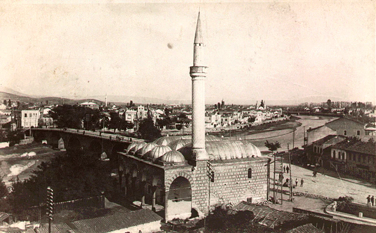
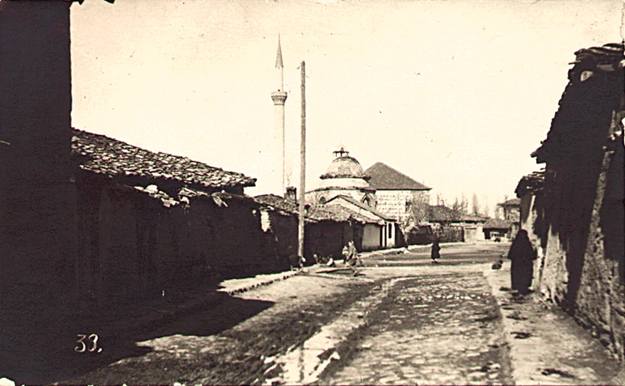
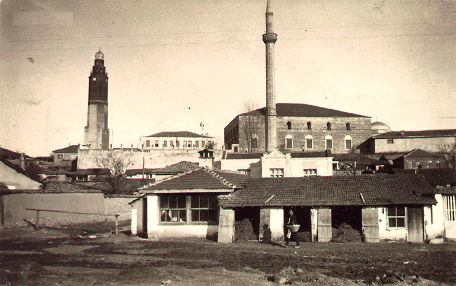
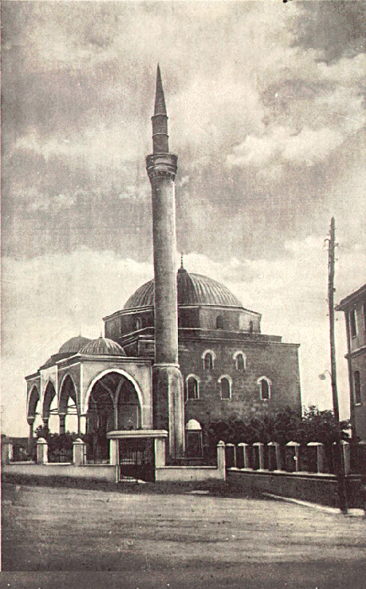
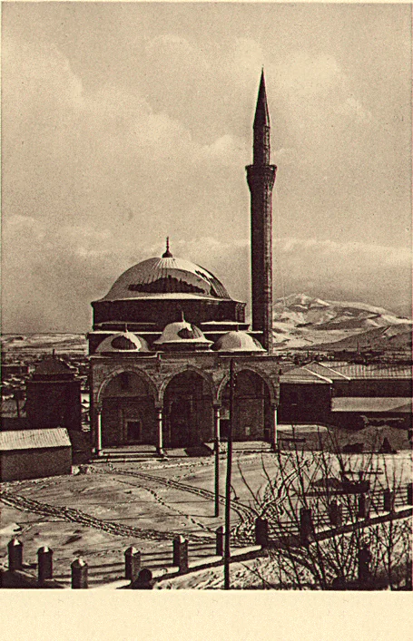
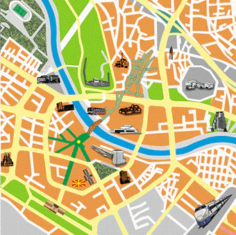

Description
La mosquée Burmali, photographiée vers le milieu du XIXe siècle. La seule mosquée de la rive droite du Vardar, juste à côté du pont de pierre. Elle tirait son nom du fût en spirale (burmali) de son minaret. Érigée à la fin du XVe siècle, elle fut démolie en 1925 pour faire place au Cercle des officiers.

La mosquée Burmali et quelques bâtiments autour. Une rue non aménagée. Lieu de rassemblement des transporteurs de marchandises avec leurs chars à bœufs. - fin du XIXe siècle

La mosquée Burmali - 1912 - 1918. L'accès sud au pont de pierre, bordé de boutiques de commerçants et d'artisans serrées les unes contre les autres.

La mosquée Burmali avec une partie du pont de pierre et la promenade le long de celle-ci. À sa gauche, les bâtiments construits devant l'entrée du pont, qui abritaient boutiques et artisans. - années 1910.

La mosquée Burmali - début des années 1920. Devant le pont, on remarque les premiers kiosques de services et de vente, à l'architecture soignée dans les détails, notamment les toits.

Mosquée Burmali - 1920.

La mosquée Hatundžuk et son turbe. À l'arrière-plan, le minaret de la mosquée Yahya Pacha. La mosquée Hatundžuk date de 1511. Elle fut bâtie par Hani Hatun, l'une des filles de Yahya Pacha. Son nom, Hatundžuk, signifie « petite dame » ou « demoiselle ». - fin du XIXe siècle.

La mosquée Hadži Balaban. Elle se trouve entre le Kuršumli An et la mosquée Dukandžik. Érigée au XVe siècle. (fin du XIXe siècle)

La tour du Bey (ou tour féodale). Cette tour appartenait à un bey. Elle se dresse devant l'entrée principale de l'actuelle Maison de l'armée de la R. de Macédoine. La date de sa construction est inconnue, mais on la situe à la fin du XVIIe ou au début du XVIIIe siècle. La photo date du XIXe siècle.

La tour du Bey à la fin du XIXe siècle.

La tour du Bey au début du XXe siècle.

La tour du Bey, années 1910.

L'ancienne mosquée Kazandžiler, tout près du Kuršumli An. Érigée au XVe siècle, connue comme la mosquée des chaudronniers. (n'existe plus)

Mosquée Dukandžik, construite au milieu du XVIe siècle.

Le Kuršumli An, construit au milieu du XVIe siècle. Un édifice monumental de l'architecture civile islamique. Il se trouve dans l'ancien bazar de Skopje, juste à côté de l'actuel musée de Macédoine.

La tour de l'Horloge et la mosquée du sultan Murad - années 1920. La tour de l'Horloge fut érigée au milieu du XVIe siècle (1566-1572), première tour de l'horloge de l'État ottoman. Le mécanisme et l'horloger chargé de l'entretenir furent amenés de Szigetvár, en Hongrie, après la prise de la ville par les Turcs. La mosquée du sultan Murad : le sultan Murad II, père de Mehmed le Conquérant, l'érigea en 1436 comme fondation pieuse.

Mosquée du sultan Murad, années 1910.

La tour de l'Horloge et la mosquée du sultan Murad - années 1920.

La tour de l'Horloge et la mosquée du sultan Murad - années 1920.

La tour de l'Horloge et la mosquée du sultan Murad - années 1920.

La tour de l'Horloge et la mosquée du sultan Murad - années 1920.

La mosquée Gazi Isa Bey - années 1920. Érigée par Isa Bey, fils d'Ishak Bey, comme fondation pieuse après la mort de son père. (XVe siècle)

La mosquée Gazi Isa Bey - années 1920. Érigée par Isa Bey, fils d'Ishak Bey, comme fondation pieuse après la mort de son père. (XVe siècle)

La mosquée Gazi Isa Bey - années 1920. Érigée par Isa Bey, fils d'Ishak Bey, comme fondation pieuse après la mort de son père. (XVe siècle)

Mosquée Gazi Isa Bey - années 1920.

Le cimetière turc, avec la mosquée Gazi Isa Bey à l'arrière-plan - années 1920.

Mosquée Gazi Isa Bey - la cour - années 1920.

Mosquée Gazi Isa Bey - la cour - années 1920.

La mosquée Mustafa Pacha - années 1920. Érigée en 1492 par le commandant d'alors, Mustafa Pacha.

La mosquée Mustafa Pacha - années 1920. Érigée en 1492 par le commandant d'alors, Mustafa Pacha.

Mosquée Mustafa Pacha - années 1920.

La mosquée Mustafa Pacha à l'arrière-plan et, en contrebas, une partie de la mosquée Pacha Yiğit Bey, la plus ancienne de Skopje. (n'existe plus) - années 1920.

Une rue de la vieille ville et, à l'arrière-plan, la mosquée d'Ishak Bey ou mosquée Aladža. Elle fut érigée par le commandant de Skopje Ishak Bey (fils de Pacha Yiğit Bey, conquérant de Skopje) dans la première moitié du XVe siècle, en 1438. À côté de la mosquée, il fit construire comme fondation un turbe, une médersa, des konaks et d'autres édifices civils islamiques. En 1519, Mehmed, petit-fils d'Ishak Bey, la remania et ajouta les deux nefs latérales - années 1920.
Orientation

Sur l'ancienne carte d'orientation
Album photo


Thème
 Aqueduc4 cartes postales
Aqueduc4 cartes postales Kale30 cartes postales
Kale30 cartes postales Ponts60 cartes postales
Ponts60 cartes postales Quai58 cartes postales
Quai58 cartes postales Place46 cartes postales
Place46 cartes postales Édifices66 cartes postales
Édifices66 cartes postales Églises chrétiennes19 cartes postales
Églises chrétiennes19 cartes postales Édifices musulmans33 cartes postales
Édifices musulmans33 cartes postales Cercle des officiers29 cartes postales
Cercle des officiers29 cartes postales Théâtre28 cartes postales
Théâtre28 cartes postales Gare ferroviaire13 cartes postales
Gare ferroviaire13 cartes postales Écoles36 cartes postales
Écoles36 cartes postales Parcs12 cartes postales
Parcs12 cartes postales Marchés18 cartes postales
Marchés18 cartes postales Rues38 cartes postales
Rues38 cartes postales Panorama I60 cartes postales
Panorama I60 cartes postales Panorama II30 cartes postales
Panorama II30 cartes postales Collages55 cartes postales
Collages55 cartes postales Inondations9 cartes postales
Inondations9 cartes postales Séisme27 cartes postales
Séisme27 cartes postales Skopje 200026 cartes postales
Skopje 200026 cartes postales